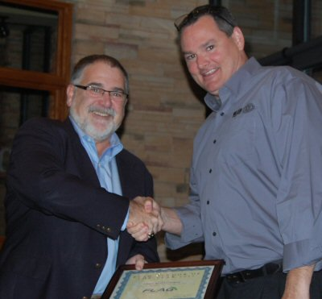

New Extreme Rotary Dies
New steel and tight tolerances deliver extraordinary performance
June 15, 2015, St. Louis, MO - The new Extreme rotary dies from Wilson Manufacturing let converters achieve unprecedented accuracy for multiple applications. The dies feature an exceptionally tight-tolerance blade height with no greater than .0001” variance. Combined with new, harder, more durable steel, Extreme dies are intended to maintain critical cutting accuracy for long print runs. While under development, Extreme dies were proven for use on thin films and medical applications, as well as on board stocks and sand paper. Printers and converters that worked with Wilson during the development process describe the performance of Extreme dies as simply extraordinary.
For additional information, sales@wilsonmfg.com or 1-800-634-5248.
December 3, 2012, St. Louis, MO. Wilson Manufacturing announced its recent recognition as the FLAG Vendor of the Year for 2012. During the 2nd Annual FLAG Members Meeting held in Asheville, NC on November 13-14, the St. Louis-based rotary tooling company was named the first ever recipient of the Vendor of the Year Award. Wilson representative Todd Westover was in attendance to accept the award on behalf of the company.
According to Wade Fouts, Wilson’s Vice President of Sales, “It’s quite an honor for Wilson to be the very first to receive the FLAG award. Every day, we strive to deliver the finest quality tooling products—and back them with unequalled service for our customers. I think this award helps validate that commitment, and it’s a real pleasure to have all our efforts recognized and appreciated.”
An acronym for Flexo Label Advantage Group, FLAG is a professional buying group for independently-owned label converters. The group’s twofold objective is to combine purchasing power to reduce costs for members as well as provide growing revenue opportunities for vendor partners.
The FLAG Vendor of the Year award was presented to Wilson not only for its dedication to quality and service, but for its partnership strength and support within the group itself. In addition to participating in FLAG’s rebate program, for example, Wilson representatives offered various training and educational seminars to group members throughout the year.
John McKay, President and CEO of FLAG explains, “We were very pleased to present this award to Wilson Manufacturing. Since joining our group, the company has demonstrated time and again their value as a partner to FLAG, and has provided excellent support to our group as a whole. In addition to providing the industry’s highest quality products and services to members, they’ve helped introduce FLAG to the marketplace to help us all grow together.”

Todd Westover of Wilson
Manufacturing accepts the FLAG
"Vendor of the Year" Award from FLAG President
John McKay.